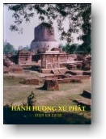

|
BuddhaSasana Home Page |
Vietnamese, with Unicode Times font |
|  |
Hành Hương Xứ Phật Phạm Kim Khánh |
-ooOoo- Lời Mở ĐầuVào cuối tháng 11, năm 1996 chúng tôi được diễm phúc tháp tùng theo đoàn hành hương nơi xứ Phật do Ngài Đại Đức Thiền Sư Khippapañño Kim Triệu hướng dẫn. Đoàn hành hương gồm 32 vị từ các xứ Pháp, Gia Nả Đại và nhiều tiểu bang khác nhau ở Mỹ như Virginia, Washington, D.C., Maryland, Philadelphia, Florida, Texas, State of Washington và California. Được biết Ngài Thiền Sư Khippapañño đã từng du học và hành đạo ở nhiều nơi tại Ấn Độ và Nepal trong 17 năm. Ngài biết nhiều về phong tục và tập quán của người Ấn, nói được tiếng Hindi và rất thông thạo những di tích Phật Giáo tại Ấn Độ. Đối với người Phật tử, hành hương nơi xứ Phật cũng tựa hồ như trở về quê cha đất tổ, tìm lại cội nguồn nền văn hóa cổ truyền, di sản tinh thần mà mình đã và đang thọ hưởng. Kho tàng quý báu này không phải bỗng nhiên hiện hữu hay được tạo nên trong ngày hôm qua, mà là công trình khám phá vĩ đại của một người đã dày công trong nhiều năm, nhiều kiếp, cả trăm, cả ngàn, nhiều a-tăng-kỳ kiếp, tự trau giồi đức hạnh và phát triển trí tuệ đến mức tuyệt đỉnh. Ngài tự mình khám phá chân lý và từ bi rọi sáng cho thế gian mê muội. Nhìn lại cảnh điêu tàn của những đền đài đã đổ nát, những đống gạch vụn đã từ lâu năm bị chôn vùi dưới lòng đất và nay được khai quật, chúng tôi chạnh lòng nhớ đến công đức vô lượng của các bậc tiền nhân đã bước theo dấu chân của Đấng Cha Lành, thọ lãnh giáo huấn siêu việt của Bậc Toàn Giác, đã tự trau giồi, tự phát triển và -- xuyên qua bao nhiêu thăng trầm của lịch sử, từ thế hệ này sang thế hệ khác trong suốt hai mươi lăm thế kỷ -- trao truyền lại nguyên vẹn cho chúng ta ngày nay những lời vàng ngọc của Đức Bổn Sư. Quả thật là nguồn cảm hứng vi diệu! Hơn bao giờ hết, ta nhận thấy rõ ràng đây quả là di sản vô giá mà ta đã kính cẩn thọ nhận từ tay các bậc tiền bối và nơi đây, trong khung cảnh oai nghiêm hùng vĩ giữa những đền tháp sụp đổ, chúng ta tự nghe lòng thúc giục hãy lập tâm chú nguyện, nhận lãnh trách nhiệm bảo tồn kho tàng Giáo Pháp. Và phương cách tốt đẹp nhất để giữ gìn di sản quý báu này là bước theo dấu chân các Ngài, cố gắng chuyên cần trong pháp học và pháp hành, đúng như lời của ngài cố Đại Đức Nārada: "Trên hai ngàn năm trăm năm xuyên qua lịch sử nhân loại, Phật Giáo là một ảnh hưởng cao quý có tánh cách thống nhất, hoà hợp và nâng đỡ con người. Có những quốc gia nổi lên, rồi suy tàn. Có những đế quốc -- xây dựng trên bạo lực và cường quyền -- đã phồn thạnh cực độ, rồi tan rã. Nhưng vương quốc của Pháp Bảo, kiến tạo bằng từ bi và trí tuệ, đến nay vẫn còn hưng thạnh và sẽ còn tiếp tục thạnh vượng ngày nào mà người Phật tử còn biết giữ gìn những quy tắc đạo lý cao cả của Giáo Pháp." Đức Phật dạy những gì Ngài làm và làm những gì Ngài dạy. Cuộc đời của Ngài là một bài học giáo lý vĩ đại, vô cùng quý báu. Những gương lành mà Ngài nêu lên cho nhân loại trong khoảng thời gian 80 năm của đời sống thánh thiện là một kho tàng Pháp Bảo trọng đại. Hành hương hẳn không phải là du lịch, chỉ nhằm thỏa mãn tánh hiếu kỳ, hay chỉ học hỏi những khám phá mới mẻ của ngành khảo cổ, mà là cảm kích nhìn tận mắt những di tích lịch sử, lắng nghe bức thông điệp hòa bình đượm nhuần từ bi và trí tuệ của Đức Thế Tôn, và rung động hoà nhịp với những lời vàng ngọc, vẫn còn vang dội từ những bức tường đổ nát và những đống gạch vụn phủ đầy rêu xanh, phảng phất đâu đây, xuyên qua hơn hai ngàn năm trăm năm. Cuộc hành hương cũng cho thấy rằng Đức Phật chỉ là một con người, không có bất luận liên hệ nào với Thần Linh. Ngài ra đời như một người, trưởng thành, sanh sống như một người, và lìa đời như một người. Là một người, nhưng Ngài là một người siêu phàm, một siêu nhân, một con người phi thường, một chúng sanh duy nhất, toàn thiện, tuyệt luân, tuyệt hảo. Do hạnh kiên trì nỗ lực và kiến thức quảng bá của chính mình, Ngài chứng minh rằng bên trong con người có ngủ ngầm một khả năng vô cùng tận mà con người phải tinh tấn trau giồi và phát triển. Tất cả những gì mà Ngài thành tựu là thành quả của những cố gắng của chính Ngài, của một con người. Do kinh nghiệm của chính bản thân mình Ngài chứng tỏ rằng giác ngộ và giải thoát trọn vẹn nằm trong tầm mức cố gắng của mỗi người. Ngài khuyến khích chúng ta không nên trao gánh nặng cho một nguyên lý ngoại lai mà phải tự mình gia công trau giồi và phát triển những năng lực và phẩm chất bên trong mình. Cuộc đi bắt đầu từ Los Angeles, Califormia., và tất cả đều gặp nhau tại Bangkok để cùng nhau đáp phi cơ ngày 20 tháng 11 sang Kathmandu, thủ đô xứ Nepal. Lưu tại đây hai đêm ba ngày, chúng tôi được hướng dẫn xem di tích của nhiều thành trì cổ xưa nổi tiếng là xinh đẹp, những khu xóm mới mẻ của người Phật tử Tây Tạng di cư và đền thờ của người Nepal theo Ấn Độ Giáo trên bờ sông Bagmati. Cũng tại nơi đây Hội Phụ Nữ Phật Tử Nepal tổ chức cung thỉnh hơn một trăm năm mươi vị Tăng, Ni trong vùng, tổ chức đọc kinh Mahā Paritta suốt ngày để cầu an cho tất cả chúng sanh và đặc biệt để phúc chúc an lành đến Đại Đức Thiền Sư Khippapañño và đoàn hành hương, chuẩn bị tinh thần cho mọi người sẵn sàng bắt đầu cuộc hành hương nơi bốn chỗ động tâm, chiêm bái các Thánh tích. Ngày 23 tháng 11 chúng tôi đáp phi cơ đi Lumbini, nơi Bồ Tát Đản Sanh, rồi từ đó đi xe viếng thành Kapilavatthu (nay là Kapilavastu) trên đất Nepal, trước khi vượt biên vào lãnh thổ Ấn, thẳng đến Sāvatthi (ngày nay là Sravasti). Từ Sravasti (Sāvatthi) đi xe đến Kusinārā (nay là Kusinagar), nơi Đức Phật nhập Đại Niết Bàn, rồi đến Benares (nay là Varanasi) gần vườn Lộc Uyển (Isipatana, ngày nay có tên là Sarnath), nơi Đức Phật Chuyển Pháp Luân. Tại Sarnath đoàn hành hương lưu lại hai ngày, đi thuyền trên sông Ganges (sông Hằng) và viếng nhiều Thánh tích, có một thời hưng thạnh mà ngày nay chỉ còn là những bức tường gạch điêu tàn. Sau đó đi Bodh Gaya, nơi Đức Bổn Sư Thành Đạo và Rājagaha (nay là Rajgir), kinh đô vương quốc Magadha của vua Bimbisāra (Bình Sa Vương) và sau đó đến vương quốc của vua Ajātasattu (A Xà Thế), toạ lạc gần đó. Rời Rajgir, đoàn hành hương đến Đại Học Nālandā, một đại học Phật Giáo cổ xưa từ thế kỷ thứ V. Từ Rajgir đến Patna, viếng cổ thành của Đức Vua Asoka, rồi đáp phi cơ đi Delhi, trạm dừng chân cuối cùng trước khi về Bangkok, ngày 12 tháng 12, chấm dứt cuộc hành hương. Về tới Bangkok, vì không có chuyến bay để chuyển về Mỹ trong ngày nên được một ngày nghỉ. Nhân cơ hội Đại Đức Thiền Sư hướng dẫn đi viếng ngôi chùa Dhammamongkol với pho tượng bằng ngọc thạch lớn nhất thế giới. Trong lời mở đầu này chúng tôi chỉ nêu lên những nơi chánh mà đoàn hành hương đã đến. Từ những nơi này chúng tôi được hướng dẫn đi viếng rất nhiều di tích lịch sử Phật Giáo khác. Bên trong sách chúng tôi sẽ có dịp mô tả đầy đủ hơn với nhiều chi tiết. Một điểm khác là, vì để thuận tiện trên đường đi, lịch trình hành hương không theo thứ tự thời gian như Đản Sanh, Thành Đạo, Chuyển Pháp Luân, Nhập Niết Bàn. Trong sách, chúng tôi xin sắp xếp lại để được hợp lý hơn. Những chuyện tích được thuật lại nơi đây phần lớn dựa theo Tam Tạng kinh điển Pāli, qua những lời giải thích của Ngài Thiền Sư Khippapañño, sách "Đức Phật và Phật Pháp", chuyển ngữ từ quyển "The Buddha And His Teachings" của Đại Đức Nārada, và sách "Phật Giáo, Nhìn Toàn Diện", phiên dịch nguyên tác "The Spectrum of Buddhism" của tác giả, Đại Đức Piyadassi. Cả hai vị, Đại Đức Nārada và Đại Đức Piyadassi đều là người Tích Lan (Sri Lanka). Hình ảnh do chúng tôi thâu. Vì ở mỗi nơi chỉ có rất ít thì giờ để chụp ảnh, trong hoàn cảnh hối hả và bận rộn, chúng tôi chỉ có thể ghi lại những kỷ niệm mà không thể tỉ mỉ chọn đúng lúc, đúng góc cạnh và ánh sáng thích nghi để sáng tạo những tác phẩm mỹ thuật. Ước mong quý vị đọc giả rộng lòng thông cảm. Nơi đây chúng tôi xin có lời cảm tạ Đạo Hữu Hồng Kiến Nam đã đọc lại bản thảo và góp nhiều ý kiến xây dựng. Chúng tôi cũng hết lòng cảm tạ cháu Nguyễn Trọng Hách, đã bỏ ra rất nhiều công phu để bảo trì hệ thống điện toán và huấn luyện chúng tôi xử dụng nhằm đảm trách phần đánh máy và trình bày. Cũng xin Cô Trần Thị Kim Liên và nhà in East West Printing nhận nơi đây lòng biết ơn của chúng tôi. Cô Liên bỏ ra rất nhiều thì giờ để liên lạc và bàn thảo với nhà in về phương diện mỹ thuật. Ông Bà chủ và quý vị nhân viên của East West Printing, nhất là Ông Nguyễn Trọng Danh, tận tình hoàn thành viên mãn phần ấn loát. Nhưng sách cũng không thể ra đời nếu không có phần của toàn thể quý liệt vị đã từ mười năm qua đóng góp vào quỷ ấn tống của Trung Tâm Nārada. Sách này sẽ ra mắt quý vị nhân kỷ niệm mười năm sinh hoạt của Trung Tâm. Đây là công đức chung của tất cả chúng ta. Ngưỡng nguyện tất cả đều an vui hạnh phúc trong chánh pháp. Sunanda Phạm Kim Khánh -ooOoo- Ðầu trang | 01 | 02 | 03 | 04 | 05 | 06 | 07 | 08 | 09 | 10 | 11 | 12 | Mục lục |
Chân thành cám ơn Bác Phạm
Kim Khánh đã gửi tặng bản vi tính
(Bình Anson, 09-2004)
[Trở
về trang Thư Mục]
last updated: 20-09-2004